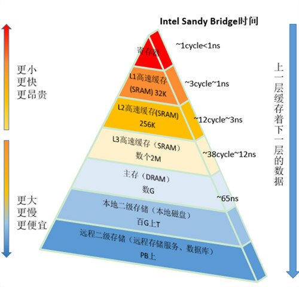

Disruptor是英国外汇交易公司LMAX开发的一个高性能队列，研发的初衷是解决内存队列的延迟问题.2010年在QCon演讲后,获得了业界关注. 2011年，Martin Fowler大神专门撰写长文对其进行介绍.由于熟悉程度问题,只能科普介绍一下,介绍之前可以先了解下ArrayBlockingQueue存在的一些问题.
锁竞争
锁竞争会导致程序性能下降.看下实验代码
static int threadNum = 4; //线程数
static int addTime = 100000000; // 自增次数
static int countWithSync = 0;
static int countWithLock = 0;
static LongAdder countWithAtomic = new LongAdder();
static final Object syncLock = new Object();
static final ReentrantLock reentrantLock = new ReentrantLock();
public static void main(String[] args) throws InterruptedException{
ExecutorService executor = Executors.newFixedThreadPool(threadNum);
testAtomic(executor);
testLock(executor);
testSync(executor);
}
// atomic 自增
private static void testAtomic(ExecutorService executor) throws InterruptedException {
final CountDownLatch latch = new CountDownLatch(threadNum);
// Atomic
long marked = System.currentTimeMillis();
for (int i = 0; i < threadNum; i++) {
executor.execute(new Runnable() {
@Override
public void run() {
for(int i=0;i<addTime;i++){
countWithAtomic.increment();
}
latch.countDown();
}
});
}
latch.await();
System.out.println("times by Atomic: " + (System.currentTimeMillis() - marked));
}
// synchronized 自增
private static void testSync(ExecutorService executor) throws InterruptedException {
final CountDownLatch latch = new CountDownLatch(threadNum);
//synchronized
long marked = System.currentTimeMillis();
for (int i = 0; i < threadNum; i++) {
executor.execute(new Runnable() {
@Override
public void run() {
for(int i=0;i<addTime;i++){
synchronized (syncLock) {
countWithSync++;
}
}
latch.countDown();
}
});
}
latch.await();
System.out.println("times by synchronized: " + (System.currentTimeMillis() - marked));
}
// reentrantLock自增
private static void testLock(ExecutorService executor) throws InterruptedException {
final CountDownLatch latch = new CountDownLatch(threadNum);
// reentrantLock
long marked = System.currentTimeMillis();
for (int i = 0; i < threadNum; i++) {
executor.execute(new Runnable() {
@Override
public void run() {
for(int i=0;i<addTime;i++){
reentrantLock.lock();
countWithLock++;
reentrantLock.unlock();
}
latch.countDown();
}
});
}
latch.await();
System.out.println("times by reentrantLock: " + (System.currentTimeMillis() - marked));
}
各起4个线程,使用不同的线程安全方式进行自增1亿次,执行结果为
times by Atomic: 1854 . times by reentrantLock: 13613 . times by synchronized: 19768 .
原子变量(CAS)比显式锁性能好很多,显式锁比同步关键字好.而ArrayBlockingQueue使用的正是显式锁.在我们使用内存队列的时候不得不面临显式锁的性能损耗.
缓存行 (CacheLine)
先看段简单的循环代码和它的性能.
// 考虑一般缓存行大小是64字节，一个 long 类型占8字节
static long[][] arr;
public static void main(String[] args) {
// 初始化 n个长度为8的数组
arr = new long[1024 * 1024][];
for (int i = 0; i < 1024 * 1024; i++) {
arr[i] = new long[8];
for (int j = 0; j < 8; j++) {
arr[i][j] = 0L;
}
}
long sum = 0L;
// 循环读取每个数组的指定位置
long marked = System.currentTimeMillis();
for (int i = 0; i < 8; i += 1) {
for (int j = 0; j < 1024 * 1024; j++) {
sum = arr[j][i];
}
}
System.out.println("Loop times:" + (System.currentTimeMillis() - marked) + "ms");
// 循环读取每个数组的8个元素
marked = System.currentTimeMillis();
for (int i = 0; i < 1024 * 1024; i += 1) {
for (int j = 0; j < 8; j++) {
sum = arr[i][j];
}
}
System.out.println("Loop times:" + (System.currentTimeMillis() - marked) + "ms");
}
第一种循环的方式 66ms 第二种方式16ms .同样是对一个二维数进行读取,性能差距还是比较大.
原因是第二种方式每次读取的是一整个的数组.在读取的时候由于缓存行的原因,当你读取第一个元素的时候.CPU会把连续的内存块一起读入缓存行中,一般是64字节,也就是整个数组都读取到CPU的Cache中.那么从Cache中读取数组后面的值就比从内存中读取快很多.

内存读取约65纳秒,L1 Cache 读取约1ns.从数值上可以直观感受到差距.
伪共享
缓存系统中是以缓存行（cache line）为单位存储的。缓存行是2的整数幂个连续字节,一般为32-256个字节.最常见的缓存行大小是64个字节.当多线程修改互相独立的变量时,如果这些变量共享同一个缓存行,就会无意中影响彼此的性能,这就是伪共享.

两个线程往同一个变量或缓存行中写,会导致缓存行不断失效,也就失去了缓存行的好处.在追求极致性能的时候就需要根据Java对象的内存布局,采用填充缓存行以避免伪共享.
HotSpot 虚拟机中，对象在内存中存储的布局可以分为三块区域：对象头（Header）、实例数据（Instance Data）和对齐填充（Padding）。
对象头 第一个字是由24位哈希码和8位标志位（如锁的状态或作为锁对象）组成的Mark Word.第二个字是对象所属类的引用.(字长取决于虚拟机是32位还是64位)
实例数据 HotSpot 虚拟机默认的分配策略为 longs/doubles(8bytes)、ints(4bytes)、shorts/chars(2bytes)、bytes/booleans(1bytes)、oops（Ordinary Object Pointers,4bits），从分配策略中可以看出，相同宽度的字段总是被分配到一起。在满足这个前提条件的情况下，在父类中定义的变量会出现在子类之前。如果 CompactFields 参数值为 true（默认为 true），那子类之中较窄的变量也可能会插入到父类变量的空隙之中.
对齐填充 对齐填充并不是必然存在的,也没有特别的含义,它仅仅起着占位符的作用.由于 HotSpot VM 的自动内存管理系统要求对象起始地址必须是 8 字节的整数倍,因此当对象实例数据部分没有对齐的话,就需要通过对齐填充来补全.
因此我们在定义对象字段的时候,实例数据总是8bytes的整数倍,如果需要凑成一个完整的缓存行,只需要填充7个没有使用到的long类型.
public final class FalseSharing implements Runnable {
public final static int NUM_THREADS = 4; // change
public final static long ITERATIONS = 50 * 1000L * 1000L;
private final int arrayIndex;
private static VolatileLong[] longs = new VolatileLong[NUM_THREADS];
static {
for (int i = 0; i < longs.length; i++) {
longs[i] = new VolatileLong();
}
}
public FalseSharing(final int arrayIndex) {
this.arrayIndex = arrayIndex;
}
public static void main(final String[] args) throws Exception {
final long start = System.currentTimeMillis();
runTest();
System.out.println("duration = " + (System.currentTimeMillis() - start));
}
private static void runTest() throws InterruptedException {
Thread[] threads = new Thread[NUM_THREADS];
for (int i = 0; i < threads.length; i++) {
threads[i] = new Thread(new FalseSharing(i));
}
for (Thread t : threads) {
t.start();
}
for (Thread t : threads) {
t.join();
}
}
public void run() {
long i = ITERATIONS + 1;
while (0 != --i) {
longs[arrayIndex].value = i;
}
}
public final static class VolatileLong {
public volatile long value = 0L;
//public long p1, p2, p3, p4, p5, p6; // comment out
}
}
这是并发编程网上的例子.VolatileLong使用额p1-p6来做填充,在没注释掉之前执行时间是数量级是100ms,如果将其注释掉则是1000ms.这是典型的使用空间换时间的方式.浪费了7个8bytes的空间来提升程序的执行速度.
如果提升
Disruptor通过以下设计来解决队列速度慢的问题:
- 环形数组结构(RingBuffer组件)
为了避免垃圾回收,采用数组而非链表.同时,数组对处理器的缓存机制更加友好.
数组长度2^n,通过位运算,加快定位的速度.下标采取递增的形式.不用担心index溢出的问题.
- 无锁设计 (MemoryBarrier组件)
每个生产者或者消费者线程,会先申请可以操作的元素在数组中的位置,申请到之后,直接在该位置写入或者读取数据.
鉴于以上特性,在内存队列选型的时候可以考虑此框架.
参考链接:
https://github.com/LMAX-Exchange/disruptor https://tech.meituan.com/disruptor.html http://ifeve.com/disruptor/